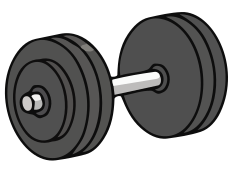
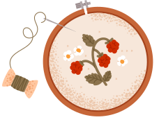
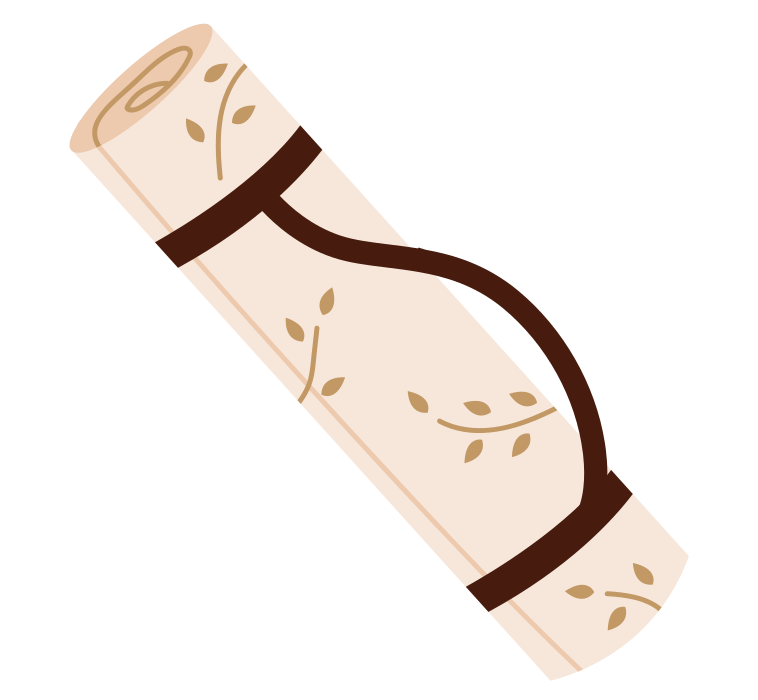
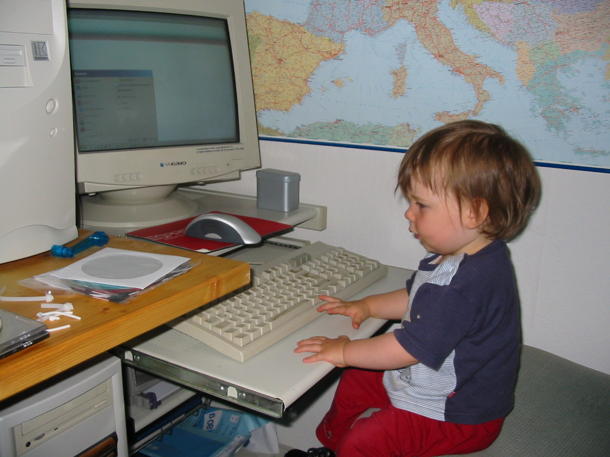
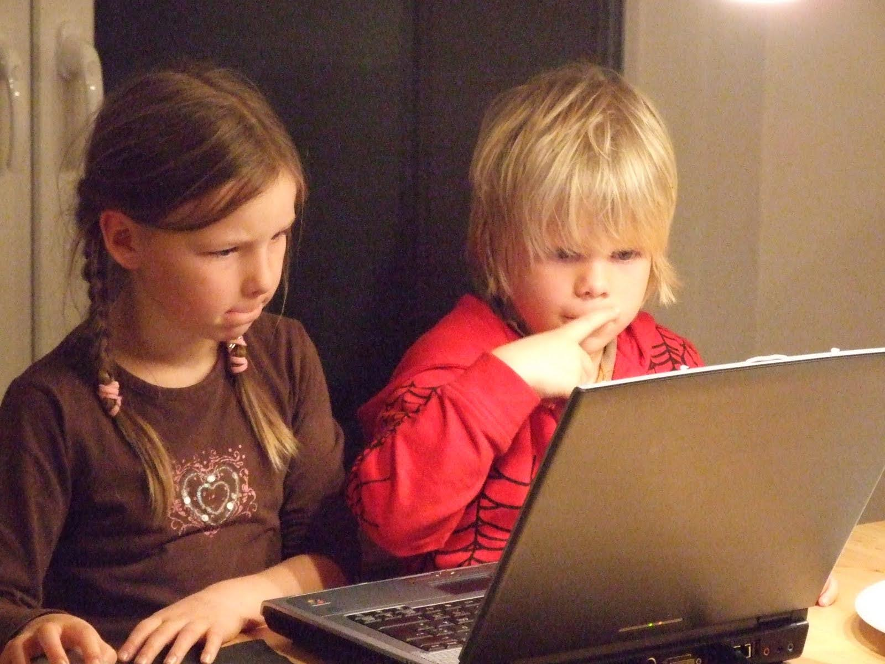

Persönliches

Willkommen auf meiner persönlichen Seite!
Hier bekommen Sie einen Einblick in meine Hobbys und Interessen neben dem Studium.
Ich probiere gerne Neues aus und habe viele unterschiedliche Leidenschaften, die sich auch gerne von Woche zu Woche verändern. :)
Wenn Sie neugierig geworden sind und mehr über meine anderen Facetten erfahren möchten, sind Sie hier genau richtig.
Ich spiele seit Anfang 2026 Volleyball beim Hochschulsport und starte ab Ende April zusätzlich mit Beachvolleyball. Es macht mir unglaublich viel Spaß und ist ein perfekter Ausgleich zum Studium.
Ich gehe schon seit Ewigkeiten regelmäßig zweimal pro Woche ins Fitnessstudio und arbeite immer noch an meinem ersten Klimmzug :)

Zurzeit probiere ich mich an meinen ersten Stickprojekten aus und aktuell ist kein Kleidungsstück in meinem Schrank wirklich sicher vor mir.

Ich versuche, regelmäßig Yoga in meinen Alltag zu integrieren. Das klappt mal besser und mal schlechter, hilft mir aber sehr, einen Ausgleich zu finden.

Was ich sonst noch so mache: lesen, wandern, joggen, Freunde treffen, programmieren, ...
Ich habe schon früh angefangen, mich für Computer und Computerspiele zu interessieren, vor allem, weil mein Vater und mein Bruder sich ebenfalls sehr dafür begeistern.


In der 6. Klasse habe ich dann in der Roboter-AG angefangen.
Dort haben wir mit dem Mindstorms-Roboter von Lego programmiert. Gemeinsam mit meiner Team-Partnerin habe ich mich damals sogar für die Weltmeisterschaft von Roberta in Russland qualifiziert.
Ein besonderes Highlight war ein Radiointerview zu diesem Wettbewerb, das ihr euch hier anhören könnt: